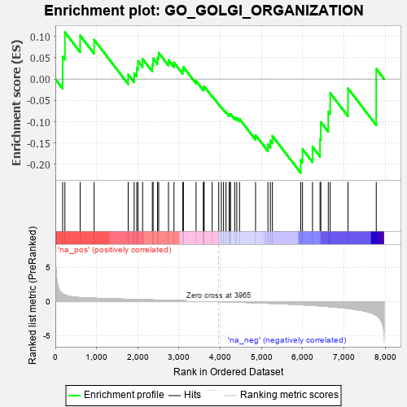
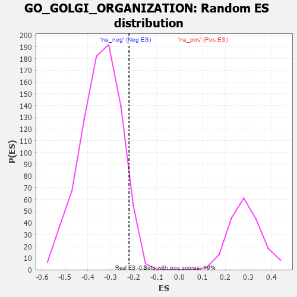

| | | Dataset | 7d |
| Phenotype | NoPhenotypeAvailable |
| Upregulated in class | na_neg |
| GeneSet | GO_GOLGI_ORGANIZATION |
| Enrichment Score (ES) | -0.21996509 |
| Normalized Enrichment Score (NES) | -0.6373899 |
| Nominal p-value | 0.9383477 |
| FDR q-value | 0.9999164 |
| FWER p-Value | 1.0 |
Table: GSEA Results Summary

Fig 1: Enrichment plot: GO_GOLGI_ORGANIZATION
Profile of the Running ES Score & Positions of GeneSet Members on the Rank Ordered List
| PROBE | GENE SYMBOL | GENE_TITLE | RANK IN GENE LIST | RANK METRIC SCORE | RUNNING ES | CORE ENRICHMENT | | 1 | RAB30 | | | 177 | 1.134 | 0.0522 | No |
| 2 | KIFC3 | | | 232 | 0.978 | 0.1096 | No |
| 3 | FBXW8 | | | 601 | 0.594 | 0.1022 | No |
| 4 | STX17 | | | 940 | 0.497 | 0.0923 | No |
| 5 | VRK1 | | | 1766 | 0.343 | 0.0107 | No |
| 6 | COG2 | | | 1911 | 0.319 | 0.0135 | No |
| 7 | ZW10 | | | 1973 | 0.309 | 0.0261 | No |
| 8 | DYM | | | 2006 | 0.304 | 0.0420 | No |
| 9 | STX16 | | | 2116 | 0.289 | 0.0472 | No |
| 10 | BCAS3 | | | 2352 | 0.253 | 0.0342 | No |
| 11 | COG7 | | | 2371 | 0.250 | 0.0484 | No |
| 12 | TMED7 | | | 2478 | 0.230 | 0.0501 | No |
| 13 | HUWE1 | | | 2506 | 0.225 | 0.0615 | No |
| 14 | LMAN1 | | | 2743 | 0.192 | 0.0444 | No |
| 15 | TMED5 | | | 2877 | 0.170 | 0.0387 | No |
| 16 | STX6 | | | 3087 | 0.138 | 0.0215 | No |
| 17 | TMED4 | | | 3106 | 0.136 | 0.0281 | No |
| 18 | COG3 | | | 3412 | 0.088 | -0.0045 | No |
| 19 | MAPK3 | | | 3589 | 0.062 | -0.0227 | No |
| 20 | STK25 | | | 3602 | 0.059 | -0.0203 | No |
| 21 | COG4 | | | 3608 | 0.058 | -0.0171 | No |
| 22 | VMP1 | | | 3803 | 0.027 | -0.0398 | No |
| 23 | STX18 | | | 3962 | 0.000 | -0.0597 | No |
| 24 | TJAP1 | | | 4025 | -0.012 | -0.0667 | No |
| 25 | COG1 | | | 4079 | -0.020 | -0.0721 | No |
| 26 | VPS51 | | | 4137 | -0.030 | -0.0773 | No |
| 27 | GBF1 | | | 4215 | -0.044 | -0.0841 | No |
| 28 | VTI1A | | | 4224 | -0.046 | -0.0821 | No |
| 29 | GAK | | | 4249 | -0.050 | -0.0819 | No |
| 30 | RAB2A | | | 4351 | -0.068 | -0.0901 | No |
| 31 | STX5 | | | 4400 | -0.077 | -0.0911 | No |
| 32 | LRRK2 | | | 4467 | -0.087 | -0.0937 | No |
| 33 | USO1 | | | 4855 | -0.168 | -0.1315 | No |
| 34 | LMAN2 | | | 5155 | -0.238 | -0.1535 | No |
| 35 | ATL2 | | | 5214 | -0.249 | -0.1445 | No |
| 36 | CDK1 | | | 5264 | -0.262 | -0.1334 | No |
| 37 | SURF4 | | | 5951 | -0.455 | -0.1901 | Yes |
| 38 | GCC2 | | | 5994 | -0.470 | -0.1645 | Yes |
| 39 | CDC42 | | | 6236 | -0.548 | -0.1588 | Yes |
| 40 | RAB43 | | | 6419 | -0.628 | -0.1405 | Yes |
| 41 | ARL1 | | | 6438 | -0.636 | -0.1010 | Yes |
| 42 | ATL3 | | | 6619 | -0.723 | -0.0762 | Yes |
| 43 | TMED2 | | | 6665 | -0.746 | -0.0329 | Yes |
| 44 | RAB1A | | | 7096 | -0.993 | -0.0219 | Yes |
| 45 | SYNE1 | | | 7782 | -2.011 | 0.0238 | Yes |
Table: GSEA details [plain text format]

Fig 2: GO_GOLGI_ORGANIZATION: Random ES distribution
Gene set null distribution of ES for GO_GOLGI_ORGANIZATION